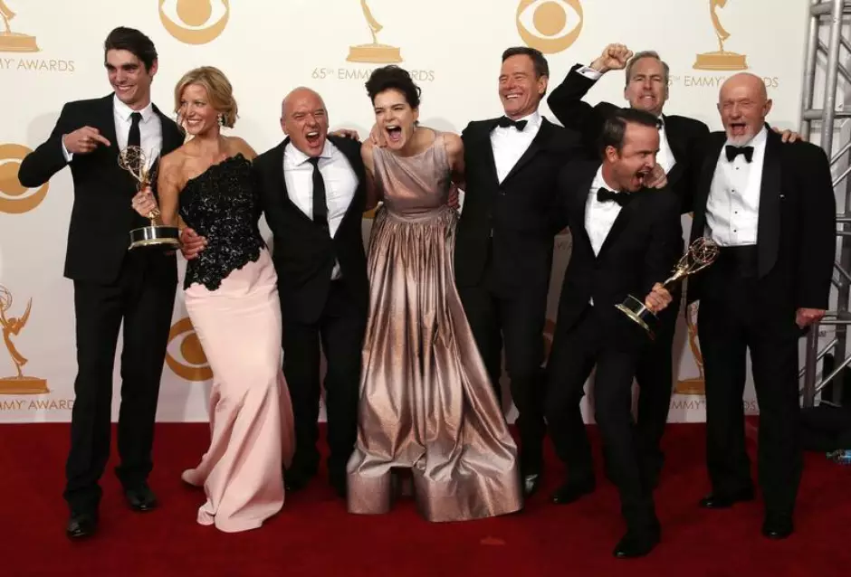

Breaking Bad se transformou instantaneamente em um clássico entre as séries dramáticas. Mas esse êxito não se refletiu apenas na enorme quantidade de fanáticos que fizeram da história de Walter White um ícone cultural, mas também impressionou pela quantidade de prêmios que colheu durante as cinco temporadas; nada menos que 230 indicações e um total de 118 prêmios em diferentes categorias.

Breaking Bad
| # | Prêmio | Título | Ano |
|---|---|---|---|
| 1 | Screen Actors Guild Awards | Melhor Elenco em Série Dramática | 2014 |
| 2 | Emmy Awards | Melhor Série Dramática | 2014 |
| 3 | Emmy Awards | Melhor Ator em Série Dramática (Bryan Cranston) | 2014 |
| 4 | Emmy Awards | Melhor Ator Coadjuvante em Série Dramática (Aaron Paul) | 2014 |
| 5 | Emmy Awards | Melhor Atriz Coadjuvante em Série Dramática (Anna Gunn) | 2014 |
| 6 | Emmy Awards | Melhor Roteiro em Série Dramática | 2014 |
| 7 | Golden Globe Awards | Melhor Série Dramática | 2014 |
| 8 | Golden Globe Awards | Melhor Ator em Série Dramática (Bryan Cranston) | 2014 |
| 9 | Screen Actors Guild Awards | Melhor Elenco em Série Dramática | 2013 |
| 10 | Emmy Awards | Melhor Série Dramática | 2013 |
| 11 | Emmy Awards | Melhor Ator Coadjuvante em Série Dramática (Aaron Paul) | 2013 |
| 12 | Emmy Awards | Melhor Atriz Coadjuvante em Série Dramática (Anna Gunn) | 2013 |
| 13 | Emmy Awards | Melhor Roteiro em Série Dramática | 2013 |
| 14 | Critics' Choice Television Awards | Melhor Série Dramática | 2013 |
| 15 | Golden Globe Awards | Melhor Ator em Série Dramática (Bryan Cranston) | 2013 |
| 16 | Emmy Awards | Melhor Ator Coadjuvante em Série Dramática (Aaron Paul) | 2012 |
| 17 | Emmy Awards | Melhor Edição de Som para uma Série | 2012 |
| 18 | Critics' Choice Television Awards | Melhor Ator em Série Dramática (Bryan Cranston) | 2012 |
| 19 | Emmy Awards | Melhor Ator em Série Dramática (Bryan Cranston) | 2010 |
| 20 | Emmy Awards | Melhor Ator Coadjuvante em Série Dramática (Aaron Paul) | 2010 |
| 21 | Emmy Awards | Melhor Ator em Série Dramática (Bryan Cranston) | 2009 |
| 22 | Emmy Awards | Melhor Edição de Som para uma Série | 2009 |
| 23 | Emmy Awards | Melhor Ator em Série Dramática (Bryan Cranston) | 2008 |